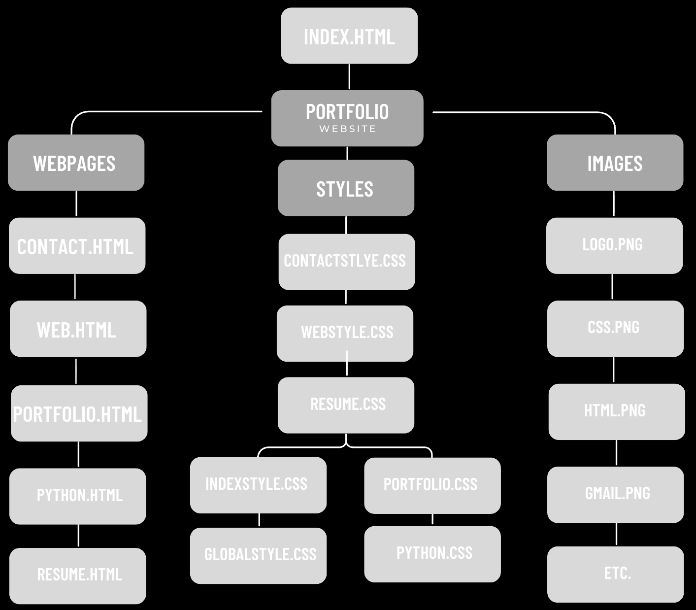
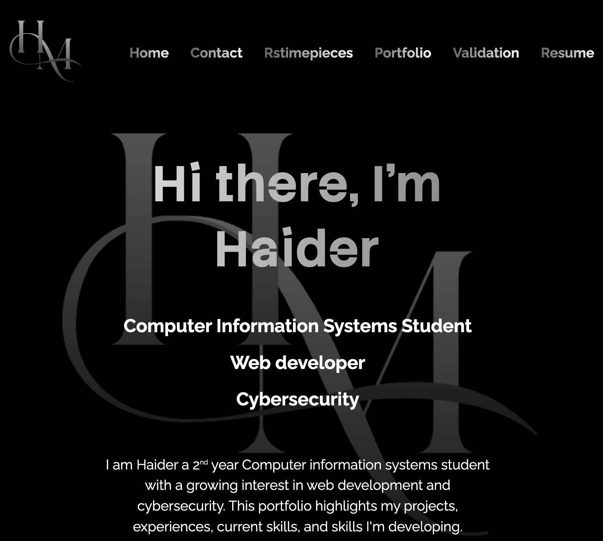
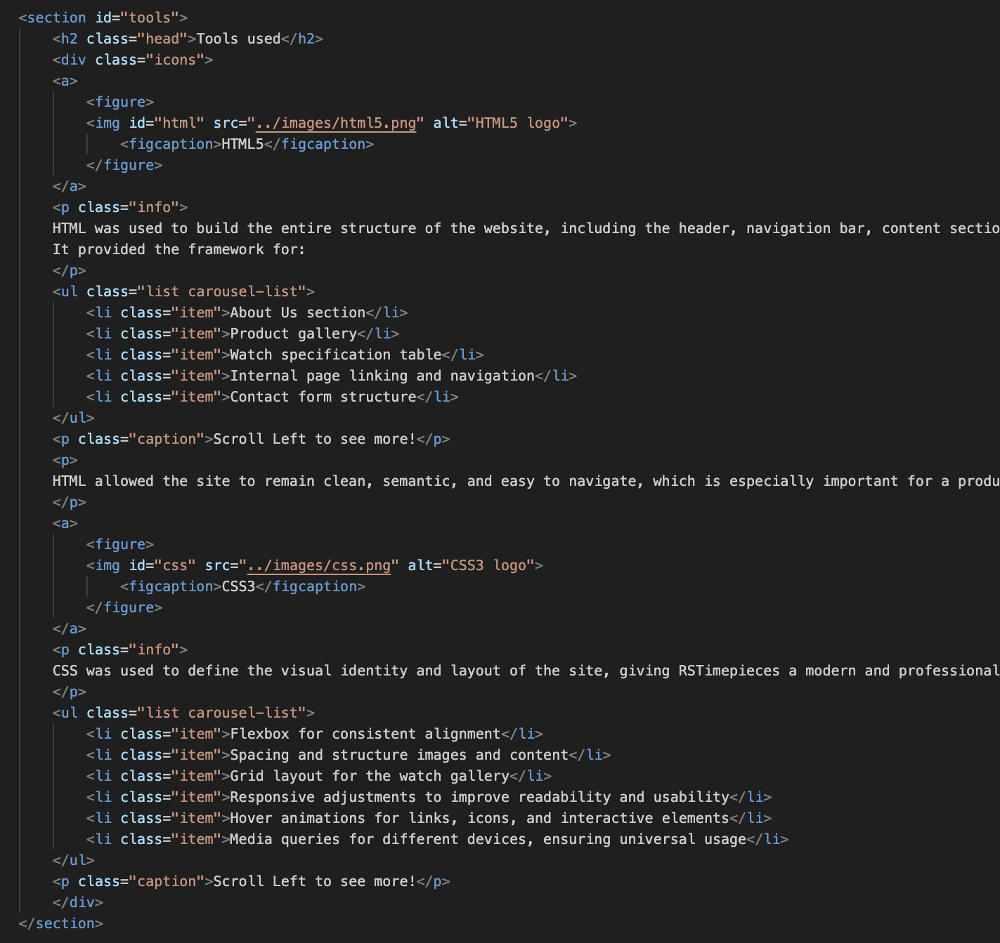
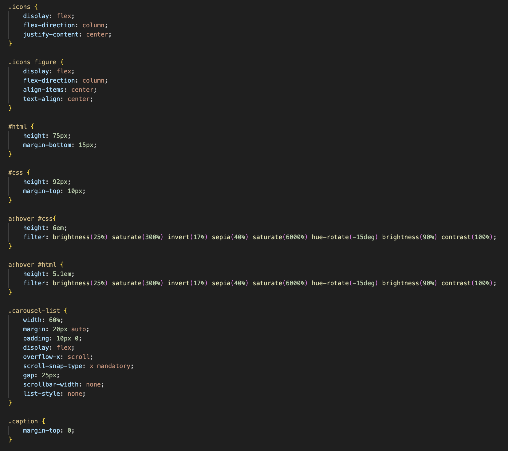

Professional Portfolio Development
What is it?
This project is the very personal portfolio website you are on right now! Designed to showcase my academic work, developing skills, and growing interests in web development and cybersecurity. It includes a structured homepage with an About Me section and contact links, along with dedicated artefact pages that highlight completed projects and reflect on my learning. The site also features a styled contact page with icons and a form for direct communication. Its purpose is to present my work professionally, demonstrate my abilities with HTML and CSS, and serve as a foundation I can continue expanding as I progress through my degree
Tools used
HTML was used to build the full structure of the portfolio, organizing each section and page into a clear, navigable layout. It provided the foundation for the homepage, artefact pages, and contact page, allowing the content to be structured cleanly and semantically
- Hero and introduction on the homepage
- About me section and background information
- Project (artefact) pages with structured descriptions
- Navigation bar and dropdown menu
- Contact form structure
Scroll Left to see more!

CSS defined the visual identity of the portfolio, using a modern black-and-silver theme that aligns with a professional and minimal style. It controlled typography, spacing, gradients, and hover animations while keeping the layout consistent across all pages. CSS also ensured the site remained responsive and usable on different screen sizes
- Gradient text effects for headings, nav items, and links
- Flexbox layouts for headers, sections, and page content
- Scroll-snap carousels for images and list items
- Dropdown navigation menu built entirely with CSS
- Spacing and alignment for improved readability
- hover animations for icons, links, and buttons
- Media queries for different devices, ensuring universal usage
Scroll Left to see more!
Development Process
I began the portfolio by sketching wireframes to map out the layout of each page, giving me a clear blueprint for the structure and user flow of the site. From there, I built the main sections step-by-step, starting with the homepage and expanding into artefact pages and the contact page. To keep the project organized, I separated global CSS styles from page-specific styles, allowing for cleaner code and easier reuse across multiple pages. As the site grew, I added interactive elements like dropdown navigation, scroll-snap carousels, and gradient text effects to enhance both usability and design. This gradual, structured approach helped me maintain consistency across the project while improving the site's overall functionality and visual flow
Obstacles Encountered
Throughout the development of this portfolio, several issues arose from the more advanced and customizable styling I wanted to implement. Gradient text, hover animations, dropdown menus, and scroll-snap carousels all required precise CSS control, and small conflicts in specificity often caused unexpected visual results. I also faced challenges with cross-device responsiveness—certain layouts looked polished on desktop but shifted, compressed, or overlapped on tablets and mobile screens
How it was Solved
I solved these issues by reorganizing my CSS, adjusting selector specificity, and separating global and page-specific styles to avoid conflicts. For the advanced visual effects, I tested and refined each component until gradients, hover states, and dropdowns behaved correctly. Responsiveness was improved through targeted media queries that fixed layout shifts on smaller screens, ensuring the site scaled cleanly across all devices
Project Gallery
You can explore the full website directly through the Github link provided, or browse the images below to view the file structure, page designs, and snippets of code for both html and css




Scroll Left to see more!